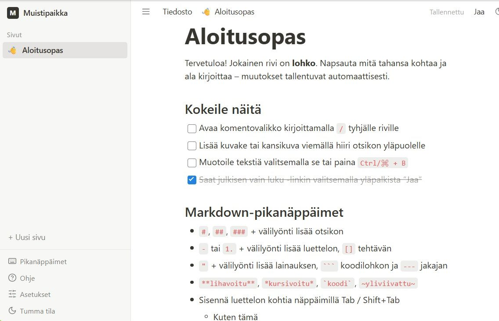

First agent - building your own app with Claude Code
The internet is full of success stories about going from rags to riches with vibe coding. In vibe coding, you tell a language model in your own words what the idea is and what you want to build. In other words, you write a prompt. The AI builds the app: it lays out the file structure, creates the files, writes the code and develops the user interface, images and sounds. The upside: anyone can be an app developer, prototypes are ready to test in hours, and building your own tools costs a fraction of what it used to. The risks: AI-written code can have security holes if nobody supervises it and reviews the code. The code turns into spaghetti as the app grows. And when (not if) the app gets a bug, fixing it can be hard without programming skills.
Next I'll show you how to build your own app like Notion. I built mine in an hour. The point is to demonstrate how well vibe coding suits fast development. On the other hand, building and using your own small helper apps and scripts, such as an email organizer, removes your dependence on big-tech platforms and paid services.
My computer setup:
- Windows 11 (English)
- Claude Code
- Visual Studio Code

This is what the finished app looks like. Pages, icons, cover images, to-do lists, a File menu and dark mode are all included. Muistipaikka means "a place for notes" in Finnish. The app opens in Finnish and switches to English under Asetukset → Kieli (Preferences → Language).
What you need
- A computer: Windows 10 or 11, or macOS 13 or later, with at least 4 GB of memory.
- A paid Claude subscription (Pro, Max, Team or Enterprise). A free account isn't enough.
- An internet connection and about an hour.
You don't need programming experience, Git, a GitHub account, command-line skills, an API key or a server. Everything runs on your own computer.
The workflow at a glance
- Install VS Code. The code editor where the work happens.
- Install Node.js. The program the app runs on.
- Install Claude Code. The AI assistant, as a VS Code extension.
- Sign in to Claude. Connect the extension to your Claude account.
- Make a folder. All the app's files go in one folder.
- Save the build instructions. PROMPT.md tells the AI what to build.
- Ask Claude to build it. The AI writes the code.
- Open and try it. Muistipaikka opens in your browser.
1. Install Visual Studio Code
VS Code is a free code editor. It's where you see the files the AI writes and where you talk to the AI.
- Go to code.visualstudio.com and download the version for your operating system.
- Install it with the default settings. On Windows, leave Add to PATH ticked.
- Open VS Code. You can close the welcome screens.
2. Install Node.js
Muistipaikka is a web app that runs on your own computer with Node.js. Without it, the app won't start.
- Go to nodejs.org and download the LTS version (long-term support).
- Install it with the default settings. On Windows you don't need to tick Automatically install the necessary tools.
- Close VS Code and open it again, so it finds the Node.js you just installed.
3. Install Claude Code in VS Code
Claude Code is an AI assistant that can create files, run commands and fix errors. It's installed as a VS Code extension.
- Open the VS Code extensions view: press Ctrl + Shift + X (on a Mac, ⌘ + Shift + X).
- Search for Claude Code.
- Pick the extension published by Anthropic and click Install.
Check the publisher. Install only the extension published by Anthropic. Other extensions may use a similar name.
4. Sign in to Claude
- Click the Claude Code icon (an orange, star-like icon) on the left edge of VS Code. The Claude panel opens.
- Click Sign in. Your browser opens.
- Sign in with your Claude account and approve the connection. Then go back to VS Code.
After you sign in, a Learn Claude Code checklist may appear in the panel. You can work through it or close it with the X.
5. Make a folder for the app
Claude saves all of the app's files in one folder. Make a new, empty folder for it.
- Create a new folder called
muistipaikka, for example in your Documents folder. - In VS Code, choose File → Open Folder… and open the folder you just made.
- If VS Code asks Do you trust the authors of the files in this folder?, answer Yes, I trust the authors. The folder is yours and empty.
6. Save the build instructions in the folder
The build instructions, or prompt, tell the AI exactly what to build: every feature, the look, and the Finnish terms. The prompt is in English; the app it describes is Finnish by default, with English as a second language.
- Download the prompt: PROMPT.md. If your browser opens it as text instead, save it as
PROMPT.md(Ctrl + S, on a Mac ⌘ + S). - Move
PROMPT.mdinto the folder you made in step 5. - Check that the file shows up inside the folder on the left side of VS Code.
The latest version of the prompt is also on GitHub: github.com/klyytine/notion-clone. Its Download raw file button downloads it as a ready-made file.
7. Ask Claude to build the app
Now the AI does the real work. Copy the message below into the text box of the Claude panel and press Enter.
Windows
Read PROMPT.md and build the Muistipaikka app it describes in this folder. Work step by step, and at the end check that the app starts without errors. When you're done, start the app and tell me which address to open in my browser.
Mac
Read PROMPT.md and build the Muistipaikka app it describes in this folder. I'm on a Mac, so leave out the Windows launcher (section 12). Work step by step, and at the end check that the app starts without errors. When you're done, start the app and tell me which address to open in my browser.
What happens next: Claude reads the instructions, plans the work and starts creating files. You'll see them appear on the left side of VS Code. The work usually takes tens of minutes.
- Claude asks for permission before some actions, such as the
npm installcommand, which downloads the parts the app needs. Read the request and approve it when it's about this project. - Don't close VS Code while it works. You can do something else in the meantime.
- If the work stops at a usage limit or gets interrupted, type
continuelater. Claude picks up where it left off.
Want to see the plan first? Switch the mode at the bottom of the text box to Plan before sending the message. Claude first explains what it will do and starts only after you approve the plan.
8. Open and try Muistipaikka
When Claude says it's done, it has started the app. Open the address Claude gives you in your browser. It's usually http://localhost:5173.
localhost means your own computer. The app isn't on the internet, and nobody else can see it. Your notes are saved in your browser.
The app opens in Finnish. To switch to English, open Asetukset (Preferences) in the sidebar and choose English under Kieli (Language).
Try these:
| Try | How |
|---|---|
| New page | Click + Uusi sivu (+ New Page) in the sidebar and type a title. |
| Command menu | Type / on an empty line and pick, for example, a to-do list. |
| Icon and cover | Hover above the title and choose Lisää kuvake (Add icon) or Lisää kansi (Add cover). |
| File menu | Save the page as a file: Tiedosto → Tallenna nimellä (File → Save As). |
| Language | Asetukset → Kieli (Preferences → Language) switches between Finnish and English. |
| Dark mode | Press Ctrl + Shift + L. |
Using the app later
The app keeps running as long as VS Code is open. Later, you can open it like this:
- Windows: double-click
run.batin the folder. The app opens in its own window. If you runcreate-shortcut.batonce, you get a Muistipaikka icon on your desktop. - Mac and Windows: open the folder in VS Code and type
start the appto Claude. Then open http://localhost:5173.
If something goes wrong
The best fix is almost always the same: copy the error message to Claude and ask it to fix the problem. It can read errors and fix the code itself.
"npm" or "node" is not recognized. Node.js is missing, or VS Code was opened before you installed it. Install Node.js (step 2) and restart VS Code.
The browser shows a blank page.
Tell Claude: The app shows a blank page at localhost:5173. Find and fix the problem.
"Port 5173 is already in use". The app is already running in another window, or another program is using the port. Close any extra VS Code windows, or ask Claude to start the app on a different port.
Claude reports a usage limit.
Your subscription's usage limit was reached. Wait the time it shows and type continue. Nothing is lost.
A feature is missing or works differently.
The AI doesn't build exactly the same thing every time. Tell Claude what you expected, for example: The preferences have no language setting. Add it as described in section 13 of PROMPT.md.
Make it your own
You now have a working app and an AI assistant that knows its code. Try asking for changes in your own words, for example:
Add a block type with a collapsible list.Change the app's accent color to green.Add a search box to the sidebar that searches page titles.
Ask for one change at a time and try it before the next one. If you don't like a change, ask Claude to undo it.
Sources
- Muistipaikka source code and prompt, MIT license.
- Claude Code in VS Code: the official installation and usage guide.
- Claude Code MasterClass For Everyone: the model for this guide's structure.
- Notion Help Center in Finnish: the app's Finnish terminology.
Installation steps and requirements checked against the official Claude Code documentation on 7 October 2026.